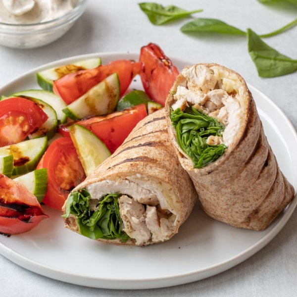

Grilled Chicken Ranch Wraps with Balsamic Tomatoes & Cucumbers

Total Time
35 min
Nutrition (per serving)
710.8 kcalCalories
52.1 gProtein
45.4 gCarbs
34.6 gFat
Full nutrition table
| Calories | 710.8 kcal |
| Total fat | 34.6 g |
| Saturated fat | 8.8 g |
| Trans fat | 1 g |
| Cholesterol | 160.3 mg |
| Sodium | 767.3 mg |
| Carbohydrates | 45.4 g |
| Fiber | 4 g |
| Sugars | 11.4 g |
| Protein | 52.1 g |
| Potassium | 1181.4 mg |
| Calcium | 284.2 mg |
| Iron | 4.6 mg |
| Vitamin A | 849.1 IU |
| Vitamin C | 21.3 mg |
| Vitamin D | 9 IU |
Cookware
Ingredients
- 1 (5 oz) pkgbaby spinach
- 1 ½ lbchicken breasts, boneless skinless
- 1English cucumber
- 4large flour tortillas
- ½ (8 oz) blockmozzarella cheese
- 2tomatoes
- balsamic vinegar
- black pepper
- dill, dried
- extra virgin olive oil
- garlic powder
- mayonnaise
- onion powder
- parsley flakes
- salt
Steps
- Holding a knife parallel to the cutting board, cut the chicken in half horizontally to form thin fillets. Pat dry with paper towel and season both sides with salt and pepper.1 ½ lb chicken breasts, boneless skinless
½ tsp salt
¼ tsp black pepper - Preheat a grill pan or regular skillet over medium-high heat.
- When the grill pan or skillet is hot, drizzle with oil and add fillets. Grill until cooked through, about 3-4 minutes per side. When the chicken is done, set aside on a plate and cover with aluminum foil. Wipe out and reserve pan for use later.2 tsp extra virgin olive oil
- Wash and dry the cucumber and tomatoes. Cut the tomatoes into wedges and the cucumber into thin, half moons; set aside.1 English cucumber
2 tomatoes - Add vinegar to a small saucepan and bring to a boil over medium-high heat. Once boiling, reduce to medium-low and continue to simmer, uncovered, until reduced by half, 5-7 minutes; remove from heat and set aside.½ cup balsamic vinegar
- Combine mayonnaise and spices in a small bowl; whisk to combine the ranch dressing.⅓ cup mayonnaise
1 tsp dill
¼ tsp parsley flakes
¼ tsp garlic powder
¼ tsp onion powder
¼ tsp salt
¼ tsp black pepper - Grate cheese.½ (8 oz) block mozzarella cheese
- Wash and dry spinach. (Skip if it came pre-washed.)1 (5 oz) pkg baby spinach
- Thinly slice the cooked chicken into strips.
- Lay the tortillas on a flat surface and divide spinach, chicken, grated cheese, and ranch dressing between them. Roll tightly to close.4 large flour tortillas
- Return grill pan or regular skillet to medium-high heat.
- Place wraps on the grill and cook, rotating every 1-2 minutes, until tortilla is crispy and golden. Cut each wrap in half.
- To serve, divide wraps and veggies between plates. Drizzle veggies with balsamic reduction and enjoy!